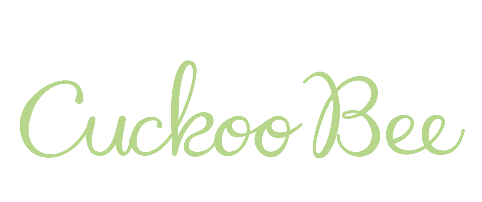
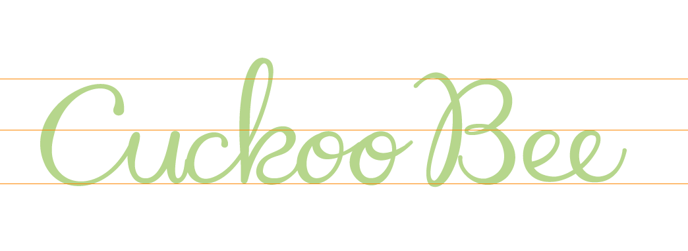
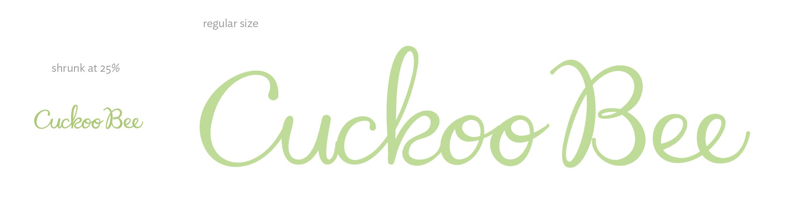
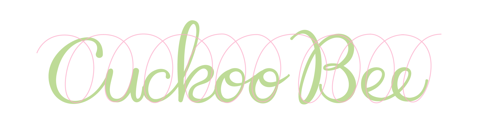
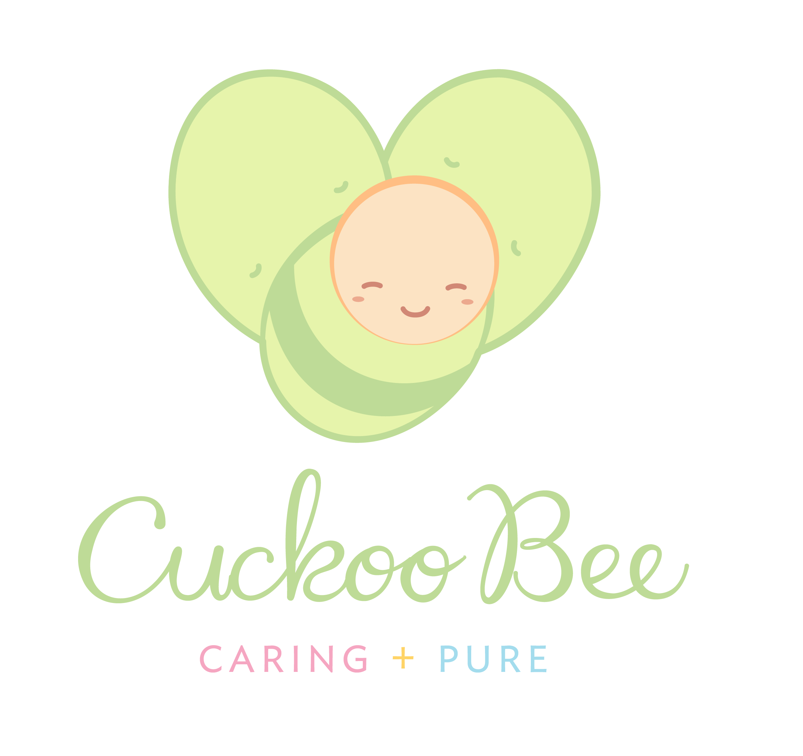

Identity Typographical Revision
The Concept : A Handwritten Note > A Typewritten One
The logotype is a custom-made mark and has been carefully created. It brings a uniqueness to the brand.
With a custom made logomark, we are assured that the identity is recognisable and unlike any other.
The logotype is updated to reflect sincerity and care. The handwritten style of the logotype helps position Cuckoo Bee as a brand that cares.
The market for baby products is already congested with brands that emulate the same thing, but what makes Cuckoobee’s logomark stand out is that it’s the most authentic as the mark was made by hand, no detail was left to chance.
About the Logotype
The higher x-height enables the type to be read from a relative long distance. That’s where it’s strength lie. Most handwritten typefaces break apart when shrunk or when read at a distance. The difference of Cuckoo Bee’s logotype is in miniscule sizes, it’s integrity doesn’t falter.
The logotype can still be read and recognised.
The Logotype Grid
> There’s a thousand ways to skin a cat
There’s a lot of ways we can write a name, but what we want is to retain it’s playfulness and make the identity light-hearted. We didn’t want a typeface that was too overbearing nor serious. True, we want our brand to be taken seriously but that doesn’t mean we should appear stiff, we can still be taken seriously but still be relaxed.
The grid is based on a loop of a cursive style of handwriting.
It’s bouncy, playful and a skip to its step.
We make that the main backbone of the logotype and we work everything out from there. The curves are aligned with the grid.
